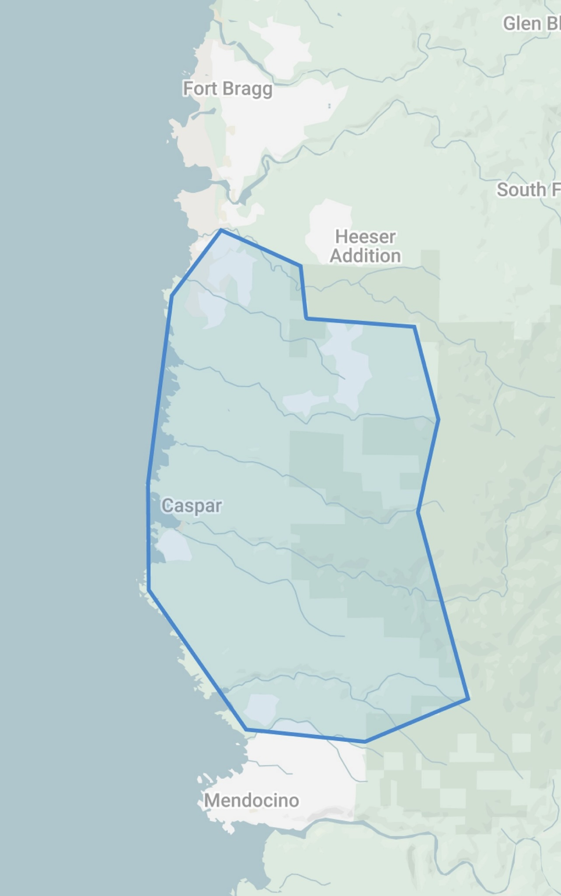
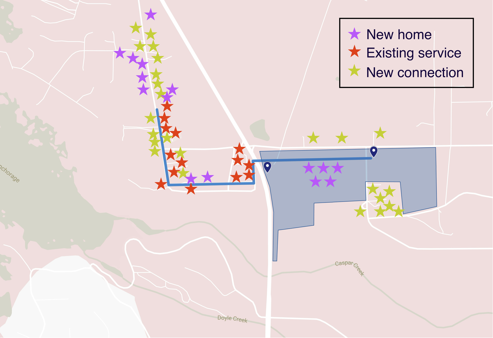
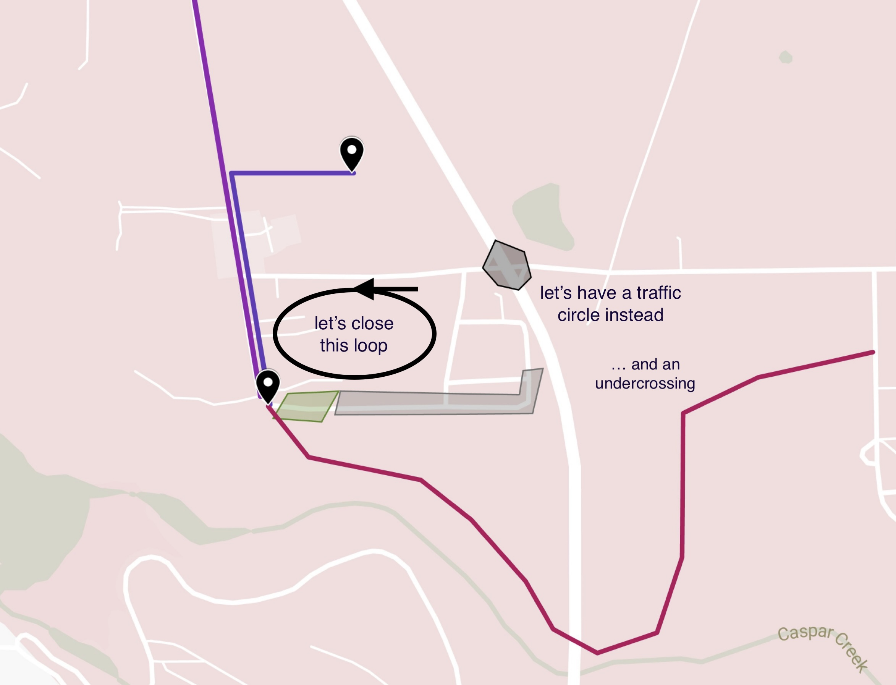

Political
Caspar Water System is regulated by a number of public agencies, including the California Water Board, the California Public Utilities Commission, the California Coastal Commission, and the Mendocino County Department of Health.
The California Coastal Commission is updating its Local Coastal Plan in 2025, through a process in which it seeks feedback from communities about land use and zoning practices along the coast. The coastal plan was last updated 40 years ago. The existing section on Caspar reads:
Caspar Village
The unique rural character of the old town of Caspar
shall be maintained. While most of the planning area
is designated for low densities, the village offers an
opportunity for construction of relatively high
density, lower cost housing if water and sewage
disposal can be provided. Design restrictions should
be enacted to preserve the character of the
town.
When we became owners of the Caspar Water property in 2021, Mendocino had been having a bad drought. Economically speaking, the village in Mendocino turns water into money through its restaurants and hotels, and we received calls that summer from hotel investors and government economic development officers. People's wells were going dry, water trucks were hauling 100 mile round-trips fetching water for the coast, and Caspar was running a surplus.
Caspar is a ghost town
Caspar has had a water surplus since the lumber mill closed in 1955.
A residential development built in the 1920s was still standing when the mill closed. Sixteen houses from this development were demolished in the 1960s to make way for Highway 1 when the Caspar Creek bridge was built, and five more of these homes burned down in the 1970s. Four homes from the original development are standing today.
Development on the California coast is heavily restricted, aiming to limit change and preserve tourism value, and the regulation started immediately after a severe decline in Caspar. We have the appearance of a town, with a center and a dense cluster of houses, but many of the houses are vacant, dilapidated or condemned. Three of Caspar Water's service connections are not in use and three of them are short-term rentals or used as second homes.
When the Coastal Commission sees a permit application in Caspar, they see a request for new development, and they follow the rules. When we're asked to do an archeological survey, we're surveying a place where people have lived continuously for over 100 years. When we're asked to do a botanical survey, we're surveying land that the lumber company tore up, covered in invasive species.
In rural areas like Caspar, sewage is a problem. Modern planning code forces rural homes to be far apart, so that each can have its own septic field and a private well. Separately, we know that a drinking water source cannot be anywhere near a septic system. The problem of rebuilding Caspar is that many of our vacant houses lack both a water connection and enough land to place a septic field.
To develop homes in Caspar village, we're going to need a sewage system. To connect new homes to the water system requires replacing water mains and a new operating permit. To add the connection count needed to make the water and sewage systems sustainable, we will need zoning changes from the County, approval from the Coastal commission, and commitment from the land owners. Still, unless all of those homes are occupied by permanent residents, Caspar will continue having a surplus of water.
Under the circumstances, Caspar is likely to remain a ghost town. Highly scenic place.
Mendocino Coast: let's make a water district
Caspar is not the only Mendocino logging village with a historic water system.
Elk County Water District
The Elk County Water District (ECWD) was formally created on
April 22, 1957, when the Mendocino County Board of
Supervisors issued a "Statement of Creation". The ECWD took
over an existing town water system that had been in
operation since before 1900.

Proposed water district boundary, approximately 25 square miles.
Mendocino supervisors have several times in recent years rejected proposed ordinance to restrict water hauling within the County. Water districts present a different solution to this problem, because water districts can fund themselves, and because they present a local solution to a local problem. First, we should recognize that water hauling is two concerns in one: agricultural water and drinking water.
A water district on the Mendocino coast stretching from Fort Bragg to Mendocino village, with Caspar at the center, would have the power to restrict water hauling within its boundary and to set terms for water use by short-term rentals, for example. At the same time, residents of the proposed water district would have access to safe drinking water hauled from its water trucking station at Fern Creek and Highway 1. A district of this size would absorb the Caspar South and Surfwood water systems, both of which are administered from outside the County.
Caspar: Let's have smart growth
The idea of a water district centered in Caspar is meant to solve a cyclic dependency. Development depends on zoning, zoning depends on water, and water depends on re-development. A water district covering the mid-Mendocino Coast can solve the need for drinking water outside of just Caspar, and it would mean having a board of directors overseeing our shared water resource.
The proposed water district could fund itself using long-term financial arrangements, solar and land-trust development on the land it would own, and it would turn a small profit from operating three water systems and direct water sales for qualified homes in the district.
With a water district in place, we can break the cyclic dependency using a special zoning district. The image below shows what it would look like to grow the Caspar Water system to 50 connections by permitting 10 new homes west of the highway, 5 new homes east of the highway, and connecting up to 25 existing homes within the sphere of influence. Caspar village residents would reduce their risk of septic contamination in their drinking water.

Proposed 50-connection water system in the Caspar village.
The Elk district has been led for many years by a man named Charlie Acker who is widely respected on the coast, but Elk is not our only model. Point Arena is another small historic public water system on the Mendocino Coast, but its water system is owned and operated by a private individual named Billy Hay.
Either way, Caspar will try to develop itself. Form a water district and you will have a new public drinking water supply on the Coast, you might even attract another Charlie. Don't form a water district and you will have a just another private water system, you might even attract another Billy.
Caspar: a modest suggestion about traffic
Caspar Water system today has a mile of water main to serve a dozen connections, which is not a sustainable configuration. A system this small has negative scale economies. If it were only ten houses, Caspar would never have built a community water system. Caspar Water maintains around 500 feet of water main per connection. It would be less expensive to operate private wells.
Water pipe is not the only thing Caspar has too much of following the mill's closure. Caspar has too much roadway. Caspar Frontage Road West (i.e., County Road 410B) is a particularly poor stretch of asphalt at the south end of the village. This road serves as the driveway for two parcels, both undeveloped, in addition to PG&E access.
The problem with this stretch of road is that a great many tourists enter Caspar looking for the beach or a scenic view. They follow the old Highway 1 expecting to find a parking lot or a beach, but what they find instead is a bad road and a loop back to the start. Anyone living at the south end of Caspar Road knows this: cars drive by all the time, looking for the beach, and then they either turn around and drive back, or they persist and loop around.

Proposed septic system and highway undercrossing for Caspar Village.
The County doesn't need to maintain this road, nor do the people of Caspar have a use for it. At the corner of town, where Highway 1 once sloped toward the creek, is an abandoned pullout used by visitors to the Caspar Headlands state park. This is the lowest point in town, which makes it the perfect place for a septic system recirculation tank. It could also be turned in to a nice parking lot, so that people can find the beach. We would abandon the road, giving easements to the two parcels that it served.
This corner of town was once the start of a trail to the base of the Caspar bridge. Wouldn't it be great if people could walk from the east side of Caspar to the west side of Caspar? Can we have a traffic circle at Fern Creek, for safety, too?
Blog
🚧 Caspar Water doesn't have a blog about water in Caspar. If we did, there's surely a rumor or two, about wells going dry or drill-rigs spotted drilling new wells. We could keep you posted on the proposed Fern Creek solar development.
🚧 A blog about software, though? The owner/operator could tell you that he works in open-source software, programs in Rust and Golang, works for Microsoft on the OpenTelemetry project, and other things about himself. He could talk about what a free, open-source water operating system would look like.
Our History
The Caspar Water System has roots dating back to the town's origins as a lumber community in the mid-19th century. Caspar grew around the Caspar Lumber Company, which operated until 1955.

This 1891 fire insurance map shows a 1½-inch fire hydrant on modern-day Caspar Frontage Road West.
In its heyday, Caspar was a thriving company town on the Mendocino coast, with a sawmill, railway system, and infrastructure to support its workers. The water system developed during this period served the community's growing needs.
Over the decades, our water system has evolved through a number of ground water and surface water sources. Long-time residents still recall the prominent three-level water tower that once stood as a landmark in the community.
When the lumber mill closed, many of the town's original structures were dismantled, but the water system infrastructure remained and continued to develop to serve the changing community. Today's water system is classified as a County "small water system", serving a community with fewer than 15 connections.
The Caspar duck pond, across Fern Creek Road from our former water trucking station, serves as a year-round reminder of Caspar's reputation for being wet. Many on the coast still remember the drought of 1975, recalling how Caspar gave away water that summer.
Mendocino village was impacted by the drought of 1975 drought and in the 1980s the MCCSD performed a conjunctive use study in Caspar studying the potential to pipe water from Caspar to Mendocino. We are fortunate to have a copy of the report. As indicated in the report, Caspar is lucky that scientists with the Jackson Demonstration State Forest (originally Caspar Lumber territory) have been studying our watershed for decades.
Until 2010, the Caspar water system operated a trucking station from a second well near Highway 1, but the system did not have sufficient treatment and was closed by the California division of drinking water. Today, the former trucking station and well are being used for goat farming.
System design
In modern times, the Caspar Water System has been described as a "chlorinator in the woods". We use a relatively simple process to provide clean and safe drinking water to our community.
- Source: Our raw water is sourced from a 188-feet deep well.
- Disinfection: The water undergoes chlorination to deactivate harmful bacteria and waterborne pathogens.
- Aeration: The water undergoes aeration to raise pH and oxidize iron.
- Storage: Treated water is stored in a 10,000-gallon concrete tank.
- Distribution: The water main has a linear layout with approximately 1 mile of pipe. While it starts with six-inch pipe, maintenance during our "ghost town" years has left the water main with a mixture of materials and combination of 6", 4", 3", and 2" pipe.
- Service: Our water system has 12 service connections, including the Caspar Community Center and the historic Caspar Inn.
- Pressure: Our water system delivers water using gravity feed with static pressures between 35psi and 60psi.
The aeration process works by removing carbon dioxide from the water through natural off-gassing. It's the reverse of the process causing ocean acidification, because the water has a higher concentration of carbon dioxide than the atmosphere. The addition of O₂ to the water disrupts the following chemical equilibrium:
O₂ + HCO⁻ ⇌ HCO₃⁻
In winter months, we serve approximately 800 gallons per day. In summer months, we serve approximately 2,000 gallons per day.
Water
Caspar Water operates a single well for its modern-day system, however it has operated wells at several sites in its history. Our water treatment plant sits at the top of a hill spanning both the Jughandle creek and Caspar Creek watersheds, and Caspar Water's "sphere of influence" covers the the historic village.
Our treatment system addresses two primary quality concerns. The raw water measures pH 5.9, which is slightly acidic and cause for concern because acidic water leaches copper and lead from metal pipes and fixtures. We also have relatively high organic iron content.
According to the results of a drawdown test at our primary well, we draw from an aquifer with transmissivity of 697 ft²/day. "This is one of the highest transmissivities I have seen in this area."
The test, performed at our primary well in December 2020 at the tail end of a years-long drought, estimated that our system has a sustainable capacity to draw 8 gallons per minute from each of its two wells.
It may help to think of 8 gallons per minute as 13 acre/ft per year. For an 18 acre water system at this rate, we require 9 inches of rainfall to recharge into the aquifer.
Monitoring
Owner/operator Joshua MacDonald is a software engineer with professional experience in telemetry systems, hence our monitoring system uses "cloud-native" software practices. We monitor five instruments:
- Well depth: measures the height of the water column relative to the bottom of the well.
- Chlorine tank level: lets us observe that the chlorine pump is operational.
- Water tank level: tells us how much treated water is in storage.
- System pressure: lets us observe dynamic pressure and see that the aeration pump is running.
- pH level: An in-tank probe measures the pH of the water, lets us see that our aeration process is effective.
Operators access our Influxdb instance with live monitoring data collected through several OpenTelemetry Collectors.
We have high-resolution well depth measurements dating back to August 2022, with which we can see the history of leaks, leak repairs, faucets left running, and other kinds of fine detail about our impact on the aquifer.
🚧 Our well-depth data is now online. We are working to have it update automatically.
Software
Open-source
Caspar Water System thanks the authors of the many pieces of computer software/system that we depend on, including:
- Debian Linux 🐧
- Beagleboard
- InfluxDB
- OpenTelemetry Collector
- DuckDB
- Observable Framework.
- Many Rust and Golang libraries, especially mochi-mqtt/server, and simonvetter/modbus, and the Rust Apache Arrow libraries.
Our source code is available under an Apache-2 license at jmacd/caspar.water, including:
- Custom OpenTelemetry collector build including receivers (modbus, current-loop, mqtt/sparkplug, bme280, atlas pH), exporters (influxdb, LCD displays), etc.
- Billing program (thanks johnfercher/maroto for the PDF generator library).
- Terraform definitions for cloud and station computer infrastructure (station, gateway, cloud).
Duckpond
Duckpond is a "local-first" Rust software system for managing timeseries from a variety of sources (e.g., random CSV files), based on DuckDB and Parquet files. This manages a file system of timeseries data and exports to Observable Framework.
🚧 Duckpond is being used to publish water monitoring data collected by the Noyo Harbor Blue Economy project in a volunteer collaboration. Includes a vendor-specific HydroVu client library.
🚧 Duckpond is being used to publish our high-resolution water monitoring data.
Supruglue
Supruglue is a C++ programming environment for the Beaglebone/Texas Instruments am335x PRU real-time chip aimed at being low-tech.
Mmmm. Proof of concept industrial real-time timer switch (that logs to the cloud), pulse counter, UI-1203 ("Sensus protocol") reader. I would prefer to write such a thing in Rust today, and we're not certain that Texas Instruments will continue producing this chip!
Operator
Caspar Water treatment is managed by Feiner Fixings. We measure and adjust chlorine levels weekly at the treatment plant and monthly at the Caspar Community Center. Following County guidelines, we perform routine bacteriological samples once per quarter.
Caspar Water distribution is managed by owner/operator Joshua MacDonald who has a California DWOCP grade 1 distribution license, #55555 (really!).
Thanks
Thanks to all the people and local businesses who have helped us!
Donna Feiner and Rianna Clark, our principal treatment operators.
JP Waterman for system development.
Jeff Green at Akeff Construction for pipeline repairs.
Justin Quevado at Superior Pump for system repairs.
Charlie Acker and Rio Russell at the Elk water district for technical guidance.
Rich Estabrook for well and aquifer testing.
Chris Brians for teaching us how to shovel.
Steve Horne, the previous distribution operator, for sharing everything he knew.
Ryan Rhoades at the Mendocino Community Services District.
Zach Rounds at the California division of drinking water.